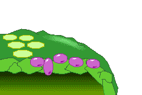

In this activity you will measure the rate of electron excitation when light hits chlorophyll. You will use DPIP, a blue compound, as an electron acceptor. The thylakoid membranes of the chloroplasts are mechanically disrupted so that the natural electron transport chain no longer functions normally.
When light strikes the chloroplasts, the DPIP is reduced by the excited electrons from chlorophyll, and it changes from its original blue color to colorless as it accepts the electrons. You will use a spectrophotometer to measure the color change, which gives an indication of the rate of the light reactions of photosynthesis under various conditions.
